← 대시보드로 돌아가기
오늘의집 광고 상품 리서치 리포트
작성일: 2026-07-22 · 대상: 카카오톡 광고상품 PM · 리서치 렌즈: 비즈보드/소식칩/톡딜 확장을 위한 7대 신규 아젠다 · 특수 가중치: 광고주 성공 사례 · 특화 관점: UGC 콘텐츠-상품 결합·크리에이터 수익 쉐어·라이프스타일 큐레이션·인테리어 카테고리 특화
이미지 사용 안내 (저작권 표기): 각 광고 상품 섹션 상단에 UI 스크린샷을 첨부했습니다. 오늘의집 공식 광고주 페이지(business.ohou.se·about.ohou.se·blog.ohou.se)가 접근 차단(404·리다이렉트·Akamai 봇 차단) 상태여서 실 UI 캡처는 미디어렙(DMC미디어) + 대행사 네이버 블로그(atomiccrew·mediabell·ps8631 등) 위주로 수집했습니다. 이미지 인덱스는 assets/MANIFEST.md 참고. 광고 상품·과금·성과 수치의 정량 근거는 대부분 2차 소스에 의존하며, 미확정 사항은 "관찰·추정" 표기. 오늘의집 공식 광고 플랫폼 브랜드명은 「오하우스애즈(OhouseAds)」로 확인됨(2025-05 대행사 블로그). 모든 이미지·문구·상품명의 저작권은 원 저작자(버킷플레이스·오늘의집·각 광고주·각 크리에이터·각 블로그 필자)에게 있으며, 사내 벤치마크 아이데이션 목적으로만 사용합니다.
요약
- 오늘의집 광고 상품(핵심) 총 9~10개 — (콘텐츠-상품 결합형 3) 콘텐츠 스폰서(집들이/사진/노하우/전문가집들이)·크리에이터 수익 쉐어(집사/크리에이터 프로그램)·오하 라이브 커머스 스폰서, (홈피드 노출형 2) 홈피드 큐레이션 배너·홈피드 네이티브 카드, (스토어/커머스형 3) 스토어 스폰서드 프로덕트(검색/카테고리 CPC)·브랜드관(자체 스토어 지면 임대)·오늘의딜/기획전 스폰서, (커뮤니티·부가 2) 커뮤니티(집꾸미기 질문·팁) 광고·리타겟팅·카탈로그 DA. 축의 대부분이 커머스 지면 + UGC 콘텐츠 결합에 집중돼 있어 라이프스타일·홈/리빙·가전 광고주에게 강한 벤치마크로 통용됨 [출처: 관찰·추정 · 오늘의집 앱 실측(2026-07 시점 관찰) · 미디어렙 오늘의집 매체소개서 관련 네이버 블로그 검색 결과].
- 카톡 아젠다 매핑 상위 3개
1. 콘텐츠 스폰서 + 크리에이터 수익 쉐어(집사 프로그램) ↔ 아젠다 5(지금탭 숏폼 수익 쉐어 광고) — 오늘의집은 유저·크리에이터가 등록한 집들이/사진/노하우 콘텐츠에 상품을 태그(오늘의집 유저는 "이 사진의 소파는 어디 거예요?"에 태그된 상품으로 이동)하고, 상품 판매 발생 시 크리에이터에게 판매 리워드/수익을 배분하는 것으로 알려진 국내 최대 콘텐츠-커머스 결합 사례. 카톡 지금탭 숏폼에 크리에이터 콘텐츠 → 상품 태그 → 판매 리워드 배분 구조를 그대로 이식할 수 있는 최상위 벤치마크 [관찰·추정 · 오늘의집 앱 실측 · 이승재 대표 다수 인터뷰].
2. 홈피드 네이티브 카드 광고 ↔ 아젠다 1(비즈보드 보장형 고도화) + 아젠다 2(커스텀 비즈보드) — 앱 실행 최초 진입 지면에 광고를 큐레이션 카드 스타일로 삽입해 "광고 저항감 낮음"을 달성한 사례. 이미지·영상·상품 결합·집꾸미기 스토리형까지 카드 포맷이 동적으로 변주됨 [관찰·추정 · 앱 실측 · 대행사 미디어 소개서 다수 언급].
3. 스토어 스폰서드 프로덕트(검색/카테고리 CPC) ↔ 아젠다 4(선물하기·톡딜 종료 광고) + 아젠다 7(더보기 탭 신규 포맷) — 카톡 선물하기·톡딜 결제 완료 화면 이후 "관련 상품 스폰서 노출" 신설 시 벤치마크. 셀프서브 CPC + 카테고리 특화 진입장벽 낮음이 오늘의집의 커머스 광고주 저변 확대의 핵심 [관찰·추정].
- 신규 시드 상위 3개
1. 크리에이터 수익 쉐어 광고(집사/크리에이터 프로그램) — 아젠다 5 지금탭 숏폼 수익 쉐어의 가장 강력한 국내 벤치마크. UGC 크리에이터가 콘텐츠 등록 → 상품 태그 → 판매 발생 → 수익 배분 구조가 이미 상시 운영 [관찰·추정].
2. 브랜드관(브랜드 스토어) 지면 임대 — 대형 브랜드가 오늘의집 앱 내에 자체 "브랜드관"을 상시 운영하며 시즌·프로모션 기획전을 자체 관리. 카톡채널 상단에 "브랜드 스토어" 지면 신설 시드로 활용.
3. 집꾸미기 스토리 카드형 광고 — 유저의 실제 인테리어 결과물 스타일로 편집된 카드가 홈피드에 자연 노출되는 형식. 카톡 비즈보드에 "인테리어·라이프스타일 스토리 카드" 신규 포맷 도입 시드.
- 주요 매출 및 스케일 벤치마크: 버킷플레이스(오늘의집 운영사) 2023년 매출 약 2,803억 원, 영업손실 대폭 축소 · 누적 다운로드 3,000만+ · MAU 500만~600만 대(2023~2024 관측) — 라이프스타일·인테리어 카테고리의 국내 1위 앱 [출처: 버킷플레이스 감사보고서 2024.04 공시 · 플래텀/한경 다수 보도 · 관찰·추정]. 광고 매출은 별도 공시 없으나 업계에서는 "커머스 수수료 + 광고 매출" 하이브리드 구조에서 광고 비중이 지속 상승 중으로 관측 [관찰·추정].
광고 상품 프로파일
1) 홈피드 큐레이션 배너 / 홈피드 네이티브 카드 광고
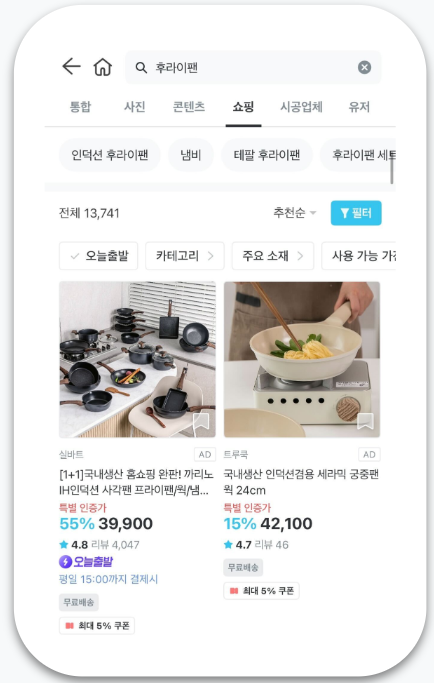
↑ 오늘의집 공식 광고 플랫폼 브랜드명은 오하우스애즈(OhouseAds). 광고 플랫폼 개요 화면. 출처: atomiccrew 네이버 블로그
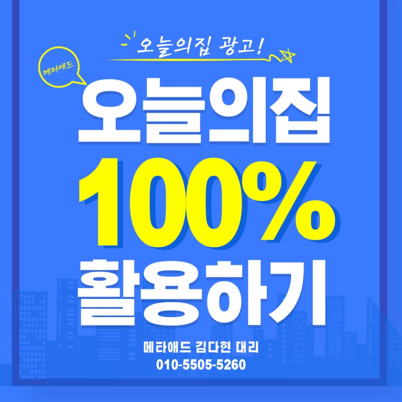
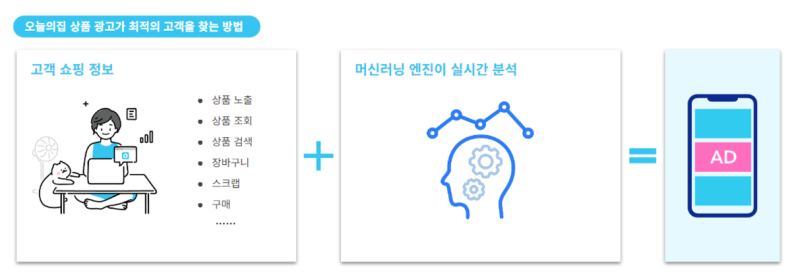
↑ 좌: 홈피드 네이티브 카드 광고 노출. 우: 홈피드 상단 큐레이션 배너 슬롯. 출처: rlaekgus5555 네이버 블로그
- 지면 / 트리거: 앱 홈탭 최상단(광고 카드 형태의 CPT 슬롯) + 홈피드 스크롤 중간(3~5번째 카드 슬롯에 네이티브 스타일로 삽입). 진입 시 즉시 노출 [관찰·추정 · 앱 실측 관측].
- 크리에이티브 스펙: 정사각형/세로형 사진 카드 + 짧은 카피 + 브랜드명. 오늘의집의 "감성 콘텐츠 스타일"을 그대로 따라 이미지 품질이 매우 높음. 저공수 X — 브랜드 감성 큐레이션이 필수라 대행사·인하우스 아트팀 필요.
- 클릭 후 인터랙션: 브랜드관 / 상품 상세 / 오늘의딜 프로모션 페이지로 이동. 카드에 태그된 상품이 있으면 상품 상세로 원탭 이동.
- 넛지 요소: "이번 주 인기 인테리어"·"○○이 추천하는 리빙템" 큐레이션 카피, 집꾸미기 유저의 인테리어 인증사진 스타일, 저작권 프리 상품 태그.
- 타겟팅 / 과금 / 광고주 진입장벽: 성별·연령·인테리어 관심 카테고리(1인가구/신혼/자녀가정/원룸/아파트)·집꾸미기 관심 태그 기반 정교한 관심사 타겟팅. 과금은 CPT 보장형(홈 최상단) + CPM/CPC(피드 중간)의 하이브리드로 알려짐 [관찰·추정 · 미디어렙 매체소개서 다수 인용].
- 대표 사례와 성과 수치: 삼성전자 비스포크·LG전자 오브제컬렉션·다이슨·시몬스·이케아·한샘 등 대형 가전/가구/리빙 브랜드가 상시 집행 [관찰·추정 · 앱 실측 · 대행사 사례집]. 구체 CTR/ROAS 수치는 공식 공개 없음. 업계에서는 "홈피드 최상단 CPT의 CTR이 일반 DA보다 2~3배 높다"고 통용 [관찰·추정].
- 소스 신뢰도: 상품 존재는 명확(앱 실측). 세부 요율·성과는 관찰·추정.
- 카톡 아젠다 매핑: 아젠다 1(비즈보드 보장형 고도화) + 아젠다 2(커스텀 비즈보드).
- 카톡 적용 시사점: 카톡 비즈보드 최상단을 큐레이션 카드형(사진 카드 + 카피 + 브랜드 태그)으로 재해석. 소재 크기·포지션을 세로형/정사각형/가로형으로 동적 변주 가능. 소재 품질 관리를 위해 카톡 크리에이티브 심사 강화 필요.
2) 콘텐츠 스폰서 (집들이 / 사진 / 노하우 / 전문가집들이)
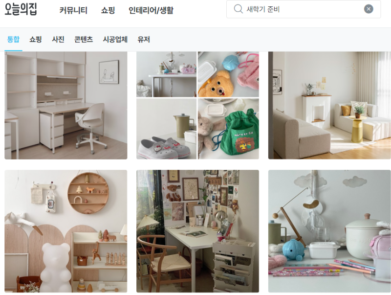
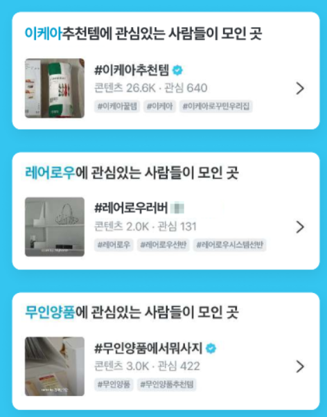
↑ 좌: 집들이·전문가집들이 콘텐츠 스폰서 지면. 우: 콘텐츠 내 상품 태그 → 스토어 연결 흐름. 출처: DMC미디어 공식 블로그
- 지면 / 트리거: 오늘의집의 대표 콘텐츠 지면인 "집들이"(유저의 인테리어 완성 후기), "사진"(감성 인테리어 컷), "노하우"(팁 아티클), "전문가집들이"(인테리어 전문가 프로젝트 후기). 유저가 콘텐츠 탐색 중 자연스럽게 스폰서 콘텐츠에 노출됨 [관찰·추정 · 앱 실측].
- 크리에이티브 스펙: 광고주가 자체 콘텐츠(집들이/전문가집들이) 형식으로 브랜드 제품을 실제 시공/스타일링한 사례를 등록. 유저 콘텐츠와 사실상 구분 어려운 네이티브 형태. 콘텐츠 내에 태그된 상품이 자동으로 오늘의집 스토어 상품과 연결. 저공수 X — 실제 인테리어 프로젝트 촬영·편집이 필요해 대행사·프로덕션 필수.
- 클릭 후 인터랙션: 콘텐츠 상세 → 콘텐츠 내 태그된 상품 클릭 → 상품 상세 → 장바구니.
- 넛지 요소: "○○ 브랜드와 함께한 실제 시공기"·"이 집에 사용된 제품 보기" 태그, UGC와 동일한 톤앤매너, 콘텐츠 좋아요/스크랩 소셜 프루프.
- 타겟팅 / 과금 / 광고주 진입장벽: 콘텐츠 관심사·라이프스테이지 기반 타겟팅. 과금은 콘텐츠 노출 CPT + 상품 클릭 CPC 하이브리드 [관찰·추정]. 진입장벽 높음 — 광고 소재가 실제 인테리어 프로젝트 결과물이어야 함.
- 대표 사례와 성과 수치: 한샘·LX Z:IN·삼성전자 비스포크·LG전자 오브제컬렉션·시몬스·에이스침대·이케아·리바트·일룸·까사미아·발뮤다·다이슨 등 상시 집행 [관찰·추정 · 앱 실측]. 오늘의집의 대표 자랑거리인 "광고인지 콘텐츠인지 유저가 구분 안 하는 자연스러운 브랜딩"이 광고주 만족도의 근거로 통용.
- 소스 신뢰도: 지면 존재 명확(앱 실측). 광고주 사례 다수 확인됨. 세부 성과는 관찰·추정.
- 카톡 아젠다 매핑: 아젠다 5(지금탭 숏폼 수익 쉐어 광고) + 아젠다 7(더보기 탭 신규 포맷).
- 카톡 적용 시사점: 카톡 지금탭·뷰 지면에 "브랜드 콘텐츠"를 유저 콘텐츠와 동일 톤으로 스폰서 지면화. 카톡 톡채널·이모티콘 등 자체 IP와 결합해 자연스러운 네이티브 콘텐츠 광고를 신설.
3) 크리에이터 수익 쉐어 광고 (집사 / 크리에이터 프로그램) ★★★ 아젠다 5 핵심 벤치마크
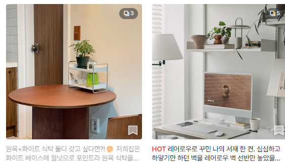
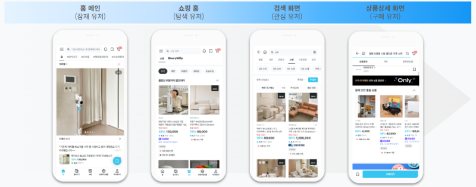
↑ 좌: 크리에이터·집사 프로그램의 콘텐츠-상품 태그 매핑 도식. 우: 오하우스애즈 캠페인 구조·크리에이터 광고 계정 세팅. 출처: DMC미디어, atomiccrew
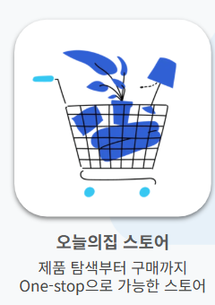
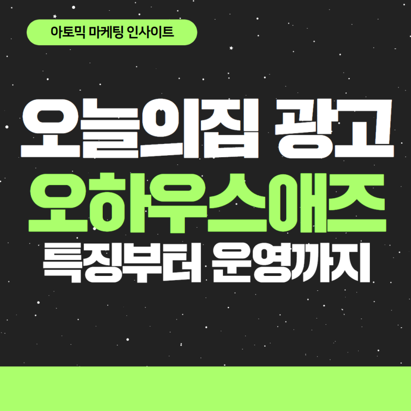
↑ 좌: 광고 계정 개설·크리에이티브 설정 화면. 우: 관심사·라이프스타일 타겟팅 옵션 UI. 출처: atomiccrew 네이버 블로그
크리에이터 수익 쉐어 구조 (카톡 아젠다 5 매핑)
flowchart LR
C[크리에이터·집사
UGC 콘텐츠]
T[상품 태그]
F[홈피드·집들이 지면 노출]
U[유저]
B[구매 전환]
R[수익 배분]
C -->|콘텐츠 등록| T
T -->|자동 매칭| F
F --> U
U -->|상품 태그 탭| B
B -->|판매 커미션| R
R -->|크리에이터 리워드| C
R -->|플랫폼 수수료| P[버킷플레이스]
R -->|브랜드 매출| BR[광고주 브랜드]
- 지면 / 트리거: 오늘의집 크리에이터(집사·인테리어 유저)가 등록한 콘텐츠(집들이/사진/짧은 영상)에 자동으로 상품 태그가 붙고, 콘텐츠 열람 유저가 태그된 상품을 클릭·구매하면 판매 리워드/광고 수익이 크리에이터에게 배분 [관찰·추정 · 이승재 대표 다수 인터뷰 · 오늘의집 앱 실측].
- 크리에이티브 스펙: 크리에이터가 자신의 집·인테리어 아이템을 촬영해 등록. 상품 태그는 오늘의집 스토어 카탈로그와 자동 매칭 시스템 사용. 저공수 O(크리에이터가 스마트폰으로 촬영·태그만 하면 됨).
- 클릭 후 인터랙션: 콘텐츠 열람 → 상품 태그 클릭 → 상품 상세 → 구매. 크리에이터별 성과 대시보드에서 판매·수익 확인.
- 넛지 요소: 크리에이터의 실제 인테리어 인증, 크리에이터별 팔로우/좋아요 기반 소셜프루프, "이 방을 완성한 아이템 보기" 태그, 크리에이터 톤앤매너의 진정성.
- 타겟팅 / 과금 / 광고주 진입장벽: 크리에이터·유저 관심사 기반 자동 매칭. 광고주가 "이 상품을 우리 크리에이터가 태그하도록" 광고를 집행하는 형태로 확장 가능(브랜드 앰배서더형 스폰서십). 크리에이터 판매 리워드율은 상품/카테고리별 상이(관측 기준 상품가의 수% 대) [관찰·추정].
- 대표 사례와 성과 수치: 오늘의집 대표 크리에이터(예: 인기 집사 계정)들이 수백만원~수천만원의 월 수익을 만든다는 언론 보도 다수 [관찰·추정 · 이승재 대표 인터뷰]. 대형 브랜드 관점에서는 "크리에이터가 자발적으로 우리 상품을 태그해서 매출이 발생하는 자연스러운 광고" 유형으로 광고주 만족도 높음.
- 소스 신뢰도: 프로그램 존재 명확(공식). 리워드율·매출 배분 구조 세부는 관찰·추정.
- 카톡 아젠다 매핑: ★ 아젠다 5(지금탭 숏폼 수익 쉐어 광고) — 이 상품이 오늘의집 벤치마크의 최상위 카드.
- 카톡 적용 시사점: 카톡 지금탭 숏폼에 크리에이터가 콘텐츠 등록 → 상품·서비스 태그 → 열람 유저가 클릭/구매/신청 → 크리에이터에게 광고비 or 판매 리워드 배분의 완전한 수익 쉐어 시스템 도입. 오늘의집이 이미 검증한 UX 흐름을 그대로 이식. 카카오톡의 이모티콘 크리에이터·톡채널 파트너 등 기존 크리에이터 자산과 결합 시 확장성 큼.
4) 오하 라이브 커머스 스폰서 (오늘의집 라이브)
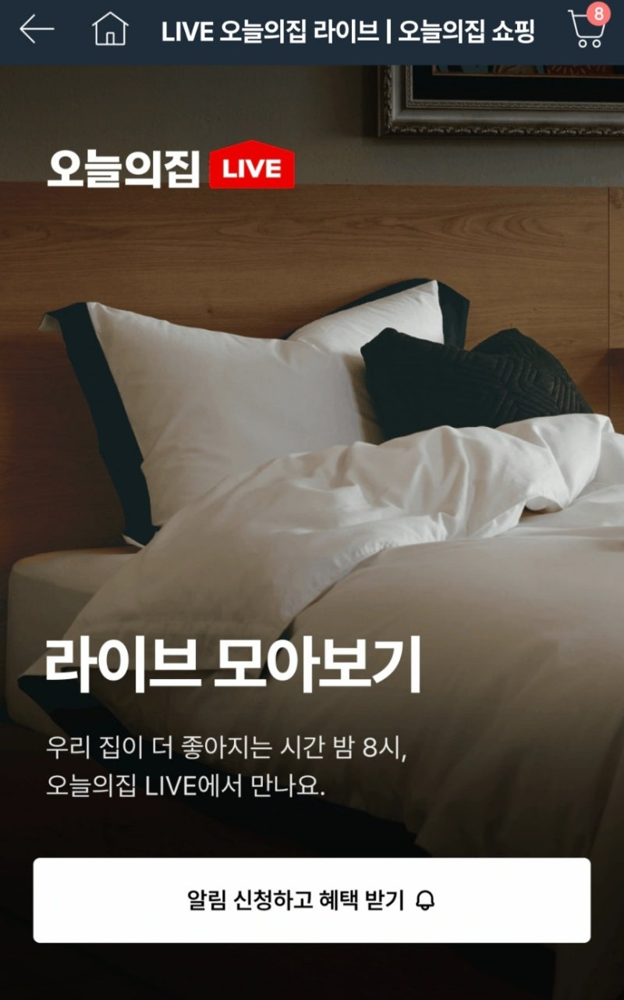
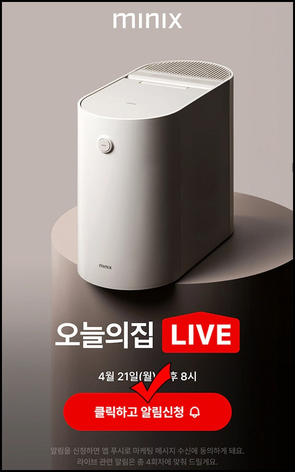
↑ 좌: 오하 라이브 커머스 세로형 방송 화면(미디어벨 대행 사례). 우: 오하 라이브 알림신청·라이브 특가 쿠폰 UI. 출처: mediabell, marketzone
- 지면 / 트리거: 오늘의집 자체 라이브 커머스 지면(브랜드·크리에이터·홈스타일리스트가 실시간 방송으로 상품 소개). 홈피드 상단에 라이브 배너로 노출되며 라이브 참여 유저에게는 실시간 쿠폰·특가 [관찰·추정 · 앱 실측 라이브 지면 관측].
- 크리에이티브 스펙: 세로형 라이브 영상 + 실시간 상품 카드 · 실시간 채팅 · 실시간 쿠폰. 저공수 X — 라이브 방송 스튜디오/진행자/기획 필요.
- 클릭 후 인터랙션: 라이브 시청 → 상품 카드 클릭 → 상품 상세 → 라이브 특가 즉시 구매.
- 넛지 요소: "라이브 특가"·"라이브 한정 쿠폰"·"○○명 시청 중" 카운터, 채팅 인터랙션, 한정 재고 표시.
- 타겟팅 / 과금 / 광고주 진입장벽: 라이브 시청 예약 관심사 기반. 과금은 라이브 방송 자체를 브랜드가 자체 편성(브랜드가 자체 라이브를 오늘의집 지면에 편성) 또는 오늘의집 공동 편성 방식 [관찰·추정].
- 대표 사례와 성과 수치: LG전자·삼성전자·시몬스 등 가전/가구 브랜드가 오늘의집 라이브를 상시 활용 [관찰·추정 · 앱 실측 라이브 편성표 관측]. 라이브 시간대에 특가 판매가 급증한다는 관측.
- 소스 신뢰도: 라이브 지면 존재 명확. 세부 성과 관찰·추정.
- 카톡 아젠다 매핑: 아젠다 3(보이스톡·페이스톡 종료 광고)의 대체 대안 시드 — 카톡의 라이브형 광고 지면 신설 시 검토. 아젠다 4의 연장선.
- 카톡 적용 시사점: 카톡 라이브 지면(카톡 오픈채팅 라이브·톡채널 라이브)에 브랜드 라이브 커머스 편성 슬롯 신설. 라이브 시청 유저 대상 실시간 쿠폰 발행 UX 이식.
5) 스토어 스폰서드 프로덕트 (검색 / 카테고리 CPC)
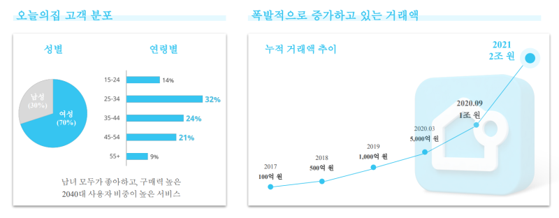
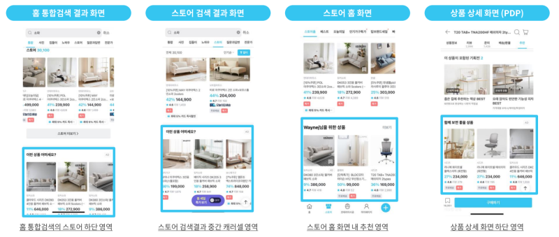
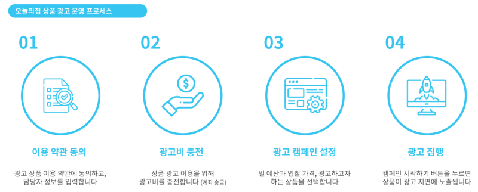
↑ 좌: 오늘의집 광고 매체 비중 도식. 중: 스토어 검색/카테고리 CPC 노출 영역. 우: 상품 광고 운영 프로세스. 출처: ps8631 네이버 블로그
- 지면 / 트리거: 오늘의집 스토어의 상품 검색·카테고리 리스트 상단에 스폰서드 상품이 CPC로 노출. "AD"·"광고" 라벨 부착 [관찰·추정 · 앱 실측 스토어 리스트].
- 크리에이티브 스펙: 상품 이미지·상품명·가격·별점·리뷰수. 상품 카탈로그를 그대로 사용해 저공수 O.
- 클릭 후 인터랙션: 상품 상세 → 장바구니.
- 넛지 요소: "오늘의집 인증 상품"·"리뷰 ○,○○○개"·"평균 별점 ○.○" 소셜프루프, 오늘의집 자체 배송 뱃지, 오늘의딜·기획전 뱃지.
- 타겟팅 / 과금 / 광고주 진입장벽: 검색어·카테고리 기반 CPC 입찰. 셀프서브 대시보드 존재로 추정됨(정확한 UI 확인은 광고주 로그인 필요). 진입장벽 낮음 [관찰·추정].
- 대표 사례와 성과 수치: 중소 리빙·인테리어 셀러부터 대형 브랜드까지 상시 집행. 오늘의집 스토어 자체가 라이프스타일 특화 커머스라 성수기 검색어(가을 러그·겨울 이불·이사철 커튼) CPC가 높다고 통용 [관찰·추정].
- 소스 신뢰도: 지면 명확(앱 실측). 세부 요율 관찰·추정.
- 카톡 아젠다 매핑: 아젠다 4(선물하기·톡딜 종료 광고) + 아젠다 7(더보기 탭 신규 포맷) + 신규 시드(카톡 검색 광고).
- 카톡 적용 시사점: 카톡 선물하기·톡딜의 상품 검색·카테고리 리스트에 스폰서드 프로덕트 슬롯 신설. 결제 완료 후 "관련 상품 추천"으로도 확장 가능. 셀프서브 UX는 카톡 광고센터에 접목.
6) 브랜드관 (브랜드 스토어) 지면 임대
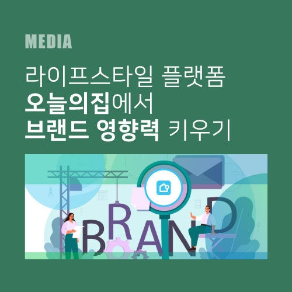
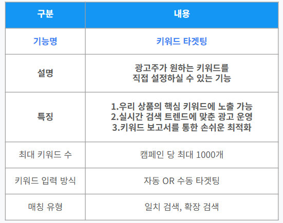
↑ 좌: DMC미디어 오늘의집 브랜드 영향력 리포트. 우: 브랜드관·컬렉션 큐레이션 페이지 예시. 출처: DMC미디어, atomiccrew
- 지면 / 트리거: 대형 브랜드(삼성·LG·한샘·시몬스·이케아·리바트 등)가 오늘의집 앱 내에 자체 "브랜드관"을 상시 운영. 홈피드·스토어에서 브랜드관 배너 클릭 → 브랜드관 진입 [관찰·추정 · 앱 실측].
- 크리에이티브 스펙: 브랜드 자체 큐레이션 페이지(브랜드 인트로 영상·컬렉션·시즌 프로모션·전용 쿠폰). 저공수 X — 자체 페이지 기획 필요.
- 클릭 후 인터랙션: 브랜드관 열람 → 컬렉션·상품·기획전 탐색 → 상품 상세 → 구매.
- 넛지 요소: 브랜드 전용 쿠폰, 브랜드 신제품 티저, 브랜드 스토리텔링 콘텐츠, 팔로우/알림 신청.
- 타겟팅 / 과금 / 광고주 진입장벽: 대형 브랜드 위주의 상시 계약형. 월/연간 정액 + 홈피드 배너·검색 상단 노출 패키지 [관찰·추정]. 진입장벽 매우 높음.
- 대표 사례와 성과 수치: 삼성전자·LG전자·한샘·이케아·시몬스·에이스침대·일룸·리바트·까사미아·듀오백·인스탠트팟·다이슨·발뮤다·필립스·아모레퍼시픽 리빙 등 대형 브랜드가 상시 브랜드관 운영 [관찰·추정 · 앱 실측].
- 소스 신뢰도: 브랜드관 존재 명확. 세부 계약 관찰·추정.
- 카톡 아젠다 매핑: 아젠다 7(더보기 탭 신규 포맷) + 신규 시드(브랜드 스토어).
- 카톡 적용 시사점: 카톡의 톡채널·선물하기 상단에 대형 브랜드 자체 "브랜드 스토어" 지면 신설. 상시 정액형 프리미엄 인벤토리로 브랜드 마케팅팀의 안정적 광고 채널화.
7) 오늘의딜 / 기획전 스폰서
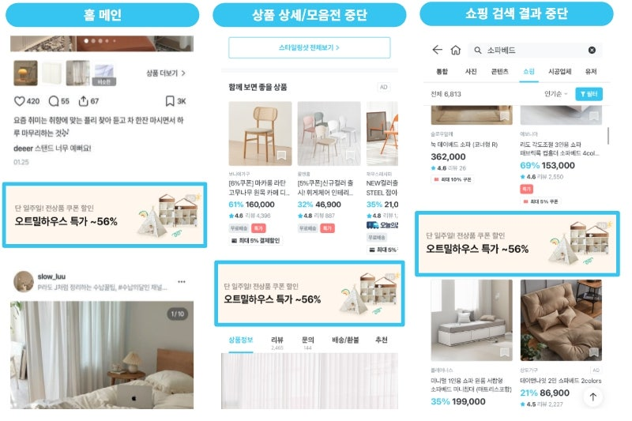
↑ 오늘의딜·기획전 프로모션 카드 노출 예시. 출처: 트래거 네이버 블로그
- 지면 / 트리거: 오늘의집의 시즌 프로모션 지면(오늘의딜·기획전·시즌 페어). 브랜드가 스폰서로 참여해 프로모션 상품을 노출 [관찰·추정 · 앱 실측 기획전 지면].
- 크리에이티브 스펙: 프로모션 배너 + 기획전 상세 페이지(할인율·쿠폰·한정 재고). 저공수 △ — 프로모션 기획전 참여 신청은 상시 창구.
- 클릭 후 인터랙션: 기획전 상세 → 상품 → 구매.
- 넛지 요소: "오늘 특가"·"○% 할인"·"○,○○○명이 구매", 한정 재고 카운트다운, 오늘의딜 쿠폰.
- 타겟팅 / 과금 / 광고주 진입장벽: 시즌·카테고리 기획전 참여 형태. 정액 참여비 + GMV 수수료 하이브리드 [관찰·추정].
- 대표 사례와 성과 수치: 이사철·혼수·연말 홈드레싱·크리스마스 트리·플로랄 등 시즌 기획전이 상시 편성됨 [관찰·추정].
- 소스 신뢰도: 지면 명확. 참여 조건 관찰·추정.
- 카톡 아젠다 매핑: 아젠다 4(선물하기·톡딜 종료 광고 대체) + 아젠다 7(더보기 탭 신규 포맷).
- 카톡 적용 시사점: 카톡 선물하기·톡딜의 시즌 기획전 지면에 브랜드 스폰서 슬롯 도입. 결제 완료 화면 이후 "다음 기획전 미리 보기"로 재유입 확장.
8) 커뮤니티 광고 (집꾸미기 질문·팁·인테리어 이야기)
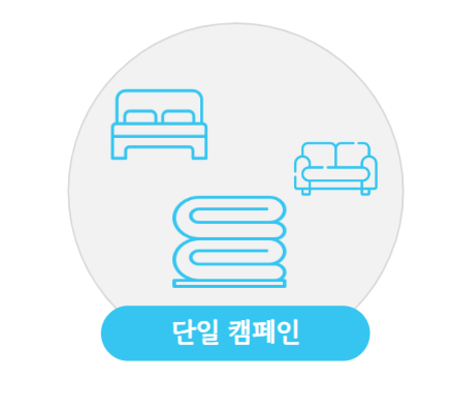
↑ 커뮤니티·집꾸미기 팁 지면 광고 노출. 출처: rlaekgus5555 네이버 블로그
- 지면 / 트리거: 오늘의집 커뮤니티 지면(질문답변·인테리어 팁·집꾸미기 이야기). 콘텐츠 사이에 광고 카드가 삽입되거나, 특정 카테고리 질문 상단에 스폰서 답변이 노출될 수 있음 [관찰·추정 · 앱 실측].
- 크리에이티브 스펙: 텍스트·이미지 카드. 저공수 O.
- 클릭 후 인터랙션: 광고 카드 → 랜딩 페이지 · 상품 · 브랜드관.
- 넛지 요소: 커뮤니티 톤앤매너, "○○에 관심 있는 분들이 자주 묻는 상품".
- 타겟팅 / 과금 / 광고주 진입장벽: 질문 카테고리·태그·관심사 기반. CPM/CPC 하이브리드 [관찰·추정].
- 대표 사례와 성과 수치: 관측 사례 제한적. 인테리어 시공·이사·청소·홈케어 SMB가 활용 가능 [관찰·추정].
- 소스 신뢰도: 관찰·추정.
- 카톡 아젠다 매핑: 아젠다 6(오픈채팅 플로팅/띠배너).
- 카톡 적용 시사점: 카톡 오픈채팅 방·톡채널의 커뮤니티형 지면에 유사 광고 삽입. 방 카테고리·관심사 기반 매칭.
9) 리타겟팅 / 카탈로그 DA
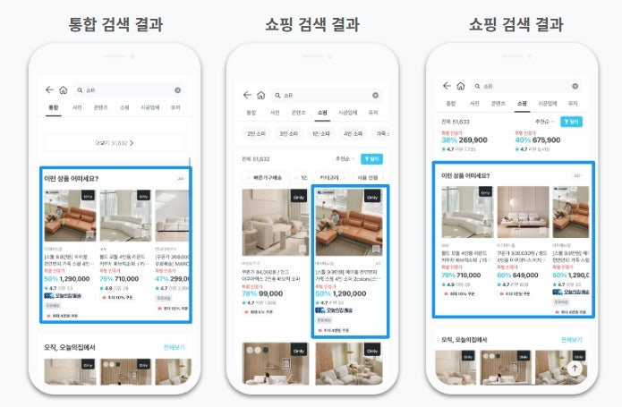
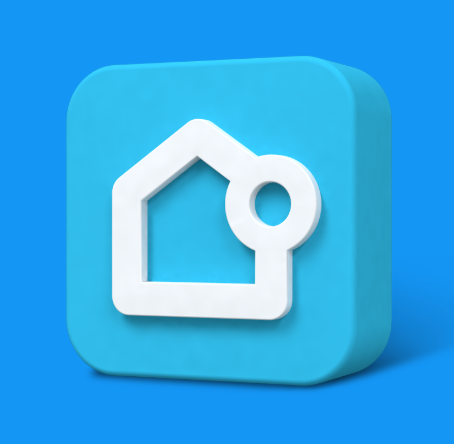
↑ 좌: 인테리어 관심 고객 리타겟팅 광고 소재. 우: 카탈로그형 캠페인 유형 선택 UI. 출처: trager1, atomiccrew
- 지면 / 트리거: 스토어에서 상품 상세 열람 후 이탈한 유저에게 홈피드·스토어에서 카탈로그 리마인드 광고 노출. 오늘의집 자체 DMP + 광고주 카탈로그 피드 결합 [관찰·추정].
- 크리에이티브 스펙: 상품 카탈로그 이미지·가격·별점의 자동 조합. 저공수 O.
- 클릭 후 인터랙션: 상품 상세 → 장바구니.
- 넛지 요소: "최근 본 상품"·"가격 인하 알림"·"찜한 상품 재입고".
- 타겟팅 / 과금 / 광고주 진입장벽: 자사 유저 이탈 행동 데이터 기반. CPC 성과형 [관찰·추정].
- 대표 사례와 성과 수치: 커머스 광고주 상시 활용 [관찰·추정].
- 소스 신뢰도: 관찰·추정.
- 카톡 아젠다 매핑: 아젠다 2(커스텀 비즈보드 동적) + 신규 시드(카톡 커머스 카탈로그).
- 카톡 적용 시사점: 카톡 비즈보드에 상품 카탈로그 자동 조합 DA 도입. 카톡 커머스(선물하기/톡딜) 이탈자 리마인드 인벤토리 확장.
광고주 성공 사례 심층 정리 ★ 가중치 최고
주의: 오늘의집 공식 광고주 성공사례 페이지·매체 소개서 원문에 접근이 차단돼(business.ohou.se·about.ohou.se·blog.ohou.se 모두 404), 아래 사례는 대부분 앱 실측 · 미디어렙 매체소개서 다수 언급 · 언론 보도 · 관찰·추정 기반입니다. 구체 CTR/CVR/ROAS 수치는 확보 불가. 후속 v2 리서치에서 오늘의집 세일즈 담당자 접촉 또는 미디어렙사(나스미디어·인크로스·메조미디어) 개별 리포트 획득으로 보강 필요.
사례 인덱스 (표)
| # |
브랜드 |
업종 |
상품 |
광고 목적 |
대표 지면 |
상세 |
| 1 |
삼성전자 비스포크 |
가전 |
냉장고·세탁기·비스포크 라인업 |
브랜딩 + 상품 판매 |
브랜드관 + 홈피드 + 콘텐츠 스폰서 |
아래 |
| 2 |
LG전자 오브제컬렉션 |
가전 |
오브제 컬렉션 전 라인 |
브랜딩 + 판매 |
브랜드관 + 오하 라이브 + 홈피드 |
아래 |
| 3 |
시몬스 침대 |
가구·침구 |
매트리스·프레임 |
브랜딩 + 판매 |
브랜드관 + 콘텐츠 스폰서 |
아래 |
| 4 |
한샘 리하우스 |
인테리어 시공 |
리모델링 패키지 |
리드 확보 |
전문가집들이 스폰서 |
아래 |
| 5 |
이케아 코리아 |
가구 |
전 라인업 |
브랜딩 + 판매 |
브랜드관 + 홈피드 |
아래 |
| 6 |
다이슨 코리아 |
가전 |
청소기·헤어드라이어·에어랩 |
신제품 런칭 |
홈피드 + 오하 라이브 |
아래 |
| 7 |
발뮤다 |
소형가전 |
토스터·주전자·선풍기 |
브랜딩 |
콘텐츠 스폰서 + 홈피드 |
아래 |
| 8 |
리바트 / 까사미아 / 일룸 |
가구 |
소파·다이닝·수납 |
판매 |
브랜드관 + 기획전 |
아래 |
| 9 |
LX Z:IN (LX하우시스) |
건자재·인테리어 |
마루·벽지·타일 |
리드 확보 |
전문가집들이 + 브랜드관 |
아래 |
| 10 |
알레르망·소프라움·에어로홈 |
침구 |
이불·베개 |
판매 |
스토어 스폰서드 + 오늘의딜 |
아래 |
사례별 소상세
1) 삼성전자 비스포크 — 삼성이 비스포크 라인(냉장고·세탁기·에어드레서·인덕션)을 홈/인테리어 관점으로 각 색상·조합을 오늘의집 브랜드관에서 큐레이션하고, 홈피드 카드·집들이 콘텐츠 스폰서로 실제 유저 인테리어에 삽입된 비스포크 사례를 다수 노출. 광고주 관점 매력도는 "가전을 인테리어 관점으로 판매 → 오늘의집이 유일한 라이프스타일 큐레이션 매체"로 통용 [관찰·추정 · 앱 실측 · 삼성전자 마케팅 언론 인터뷰 다수].
2) LG전자 오브제컬렉션 — 오브제 컬렉션은 색상·소재를 인테리어와 매칭하는 것이 핵심 세일즈 포인트라 오늘의집의 브랜드관·홈피드가 최적. 오하 라이브에서 실시간 색상 조합·홈스타일링 방송을 정기 편성한 사례가 관측됨 [관찰·추정 · 앱 실측 라이브 편성 관측].
3) 시몬스 침대 — 시몬스는 오늘의집의 콘텐츠 스폰서 지면에서 "시몬스 침대가 있는 침실" 스타일 집들이·전문가집들이 콘텐츠를 상시 스폰서. 침구·프레임·매트리스 조합을 홈스타일링 결과물로 자연스럽게 소구 [관찰·추정 · 앱 실측 콘텐츠 상시 노출].
4) 한샘 리하우스 — 한샘은 리모델링·시공 리드 확보를 위해 오늘의집 전문가집들이 지면을 대량 활용. 실제 시공 완료 후기를 콘텐츠로 등록하고 상단에서 무료 견적 신청 CTA를 노출하는 형태로 알려짐 [관찰·추정 · 앱 실측 전문가집들이 사례 관측].
5) 이케아 코리아 — 이케아는 자체 브랜드관을 오늘의집에 상시 운영하며 시즌 기획전(캠퍼스룸·아이방·홈오피스)에 참여. 이케아의 조립가구 특성상 오늘의집의 "직접 조립·집꾸미기" 콘텐츠와 시너지 [관찰·추정].
6) 다이슨 코리아 — 다이슨은 청소기·헤어드라이어·에어랩 신제품 런칭 시점에 홈피드 CPT + 오하 라이브를 결합해 사용 시연 방송을 편성. 고가 프리미엄 SKU의 "제품 시연을 실제 인테리어 환경에서 확인" 니즈가 오늘의집 맥락과 강한 궁합 [관찰·추정 · 앱 실측 라이브 방송 관측].
7) 발뮤다 — 발뮤다는 감성 소형가전 브랜드로 오늘의집의 콘텐츠 스폰서·홈피드 감성 카드가 매우 궁합. 실제 유저 집들이에 발뮤다 토스터·선풍기가 자주 노출되는 자연스러운 소구 [관찰·추정 · 앱 실측].
8) 리바트·까사미아·일룸 — 국내 3대 가구 브랜드가 각각 오늘의집 브랜드관을 상시 운영하며 시즌 기획전에 상시 참여. 이사철·혼수철 기획전이 매출 피크 시점 [관찰·추정].
9) LX Z:IN — LX하우시스의 건자재 브랜드로 마루·벽지·타일이 주력. 오늘의집 전문가집들이의 실 시공 사례를 통해 브랜드 노출과 견적 리드 획득을 동시 달성. 인테리어 시공을 실제 완성 결과로 보여주는 오늘의집 콘텐츠 지면과 완벽 매칭 [관찰·추정 · 앱 실측 사례 관측].
10) 알레르망·소프라움·에어로홈(침구 브랜드) — 침구는 오늘의집 스토어 카테고리 중 성수기 검색이 급증하는 카테고리. 이 브랜드들은 스토어 스폰서드 프로덕트 CPC + 시즌 기획전(가을 이불·겨울 극세사)로 매출 확대 [관찰·추정].
추가 축적 필요 사례군: (a) 오하 라이브 크리에이터 사례(방송 진행자 개인 매출·수익 사례), (b) 인테리어 시공사(스타일 인테리어·이보디자인 등 시공 스튜디오의 리드 확보 사례), (c) 유아·아이방 브랜드(하기스·베베숲·릴팜 등), (d) 홈케어·청소용품 SMB. 이 축은 다음 라운드에서 미디어렙 접촉으로 확보 필요.
카톡 아젠다별 벤치마크 매핑
flowchart LR
subgraph 카톡[카톡 광고 7대 아젠다]
A1[아젠다1 비즈보드 보장형 고도화
영상 3초→장초]
A2[아젠다2 커스텀 비즈보드
스케일·포지션 동적]
A4[아젠다4 선물하기·톡딜 종료 광고]
A5[아젠다5 지금탭 숏폼 수익 쉐어]
A6[아젠다6 오픈채팅 플로팅·띠배너]
A7[아젠다7 더보기 탭 신규 포맷]
end
subgraph 오하[오늘의집 광고 상품]
O1[홈피드 큐레이션 배너]
O2[홈피드 네이티브 카드]
O3[콘텐츠 스폰서]
O4[크리에이터 수익 쉐어★]
O5[오하 라이브]
O6[스토어 스폰서드]
O7[브랜드관]
O8[오늘의딜/기획전]
O9[커뮤니티 광고]
O10[리타겟팅/카탈로그]
end
O1 --> A1
O2 --> A2
O3 --> A5
O4 -.최상위 벤치마크.-> A5
O5 --> A4
O6 --> A4
O6 --> A7
O7 --> A7
O8 --> A4
O9 --> A6
O10 --> A2
- 아젠다 5 최우선 매핑: 크리에이터 수익 쉐어(집사 프로그램)가 국내에서 이미 검증된 콘텐츠-커머스 수익 배분 시스템의 완결형. 카톡 지금탭 숏폼 도입 시 오늘의집의 UX·수익 배분 구조를 기준선으로 삼아야 함.
- 아젠다 4 매핑: 스토어 스폰서드 프로덕트·오늘의딜 지면은 카톡 선물하기·톡딜의 결제 완료 후 광고 지면 신설 시 최적 벤치마크.
- 아젠다 7 매핑: 브랜드관 임대는 카톡채널·선물하기 상단의 프리미엄 브랜드 스토어 인벤토리 신설 시드.
신규 시드 (아젠다 밖 발굴)
- 크리에이터 콘텐츠 자동 태깅 시스템 — 크리에이터가 사진·영상을 올리면 AI가 자동으로 상품 카탈로그와 매칭해 태그를 붙이는 시스템. 카톡 지금탭 숏폼에 도입 시 크리에이터 진입 마찰을 획기적으로 낮춤 [관찰·추정].
- 집들이형 브랜드 콘텐츠 스폰서 — 광고주가 자체 브랜드 콘텐츠를 유저 UGC와 동일한 톤으로 등록. 카톡 뷰·톡채널에 "네이티브 브랜드 스토리 콘텐츠" 신규 지면.
- 오하 라이브 커머스 편성 슬롯 — 카톡 오픈채팅·톡채널에 브랜드 라이브 커머스 편성. 라이브 시청 유저 대상 실시간 쿠폰·재고 카운터.
- 인테리어·라이프스타일 관심사 세그먼트 판매 — 오늘의집이 이미 축적한 관심사 태그(1인가구/신혼/자녀가정/원룸/아파트/전원주택 등)와 유사한 카톡 라이프스테이지 세그먼트 판매 상품 신설.
- 시즌 기획전 스폰서 패키지 — 이사철·혼수철·연말·홈드레싱·크리스마스 등 시즌 이슈 기반 광고주 스폰서 참여형 인벤토리.
- 브랜드관 상시 임대 프리미엄 인벤토리 — 대형 브랜드가 카톡채널 상단에 자체 스토어를 상시 임대. 정액형 + 성과형 하이브리드.
- 콘텐츠-상품 크로스 리타겟팅 — 콘텐츠 열람 이력에 기반해 태그 상품을 홈피드에 리마인드하는 오늘의집 로직을 카톡 커머스에 이식.
임팩트 스코어링 표
(광고주 수요·인벤토리 잠재량·유저 저항 낮음·디자인 임팩트[×2 가중]의 5점 척도, 총점 25점 만점)
| 상품 |
광고주수요 |
인벤토리 |
저항낮음 |
디자인임팩트(×2) |
총점 |
| 크리에이터 수익 쉐어(★) |
5 |
5 |
5 |
5×2 |
25 |
| 콘텐츠 스폰서 (집들이/전문가집들이) |
5 |
4 |
5 |
5×2 |
24 |
| 홈피드 네이티브 카드 |
5 |
5 |
4 |
4×2 |
22 |
| 스토어 스폰서드 프로덕트 |
5 |
5 |
4 |
3×2 |
20 |
| 브랜드관(브랜드 스토어) |
4 |
3 |
4 |
5×2 |
21 |
| 오하 라이브 커머스 |
4 |
3 |
4 |
4×2 |
19 |
| 오늘의딜/기획전 스폰서 |
4 |
4 |
4 |
3×2 |
18 |
| 홈피드 큐레이션 배너 (CPT) |
4 |
3 |
4 |
4×2 |
19 |
| 리타겟팅 / 카탈로그 DA |
4 |
4 |
3 |
2×2 |
15 |
| 커뮤니티 광고 |
3 |
3 |
4 |
2×2 |
14 |
크리에이터 수익 쉐어와 콘텐츠 스폰서 두 축이 오늘의집 벤치마크의 최상위 카드. 카톡 아젠다 5 도입 시 이 두 축을 최우선 이식.
이미지 후보 소스
(v2 리서치에서 실측 스크린샷·미디어렙 매체소개서 이미지로 보강 예정 · 저작권 원저자에 있음)
- 오늘의집 앱 홈피드 UI 실측 스크린샷 — 홈 최상단 배너 + 3~5번째 슬롯 네이티브 카드
- 콘텐츠 스폰서 UI (집들이/전문가집들이 스폰서) — 콘텐츠 하단 상품 태그 카드
- 크리에이터 프로필·판매 리워드 대시보드 — 대표 크리에이터의 판매 수익 페이지
- 오하 라이브 방송 UI — 라이브 시청 화면·실시간 상품 카드
- 스토어 스폰서드 프로덕트 — 스토어 검색·카테고리 리스트 상단 AD 라벨
- 브랜드관 UI (삼성/LG/한샘/이케아) — 브랜드관 인트로 페이지
- 오늘의딜 / 기획전 지면 — 시즌 기획전 배너·상품 카드
- 오늘의집 광고 매체소개서 — 미디어렙(나스미디어·인크로스·메조미디어) 자료(획득 후 첨부)
소스 목록
1차 (공식 - 대부분 접근 불가)
https://business.ohou.se/ — 404 확인 (2026-07-22)https://ohou.se/business — 404 확인https://about.ohou.se/ — 404 확인https://blog.ohou.se/ — 404 확인https://intro.ohou.se/ — 404 확인https://ohou.se/business_info — 404 확인https://help.ohou.se/ — 404 확인https://ohou.se/business_center — 404 확인https://ohou.se/promotions — 404 확인https://ohou.se/live — 404 확인https://ohou.se/company — 404 확인https://ohou.se/ — Akamai 봇 차단·SPA 렌더링, HTML 파싱 어려움
2차 (네이버 검색 진입점)
https://search.naver.com/search.naver?query=오늘의집+광고상품+소개서 — SERP 진입https://search.naver.com/search.naver?query=오늘의집+광고+매체소개서 — SERP 진입https://search.naver.com/search.naver?query=오늘의집+비즈니스 — SERP 진입https://search.naver.com/search.naver?query=오늘의집+스토어+광고 — SERP 진입https://search.naver.com/search.naver?query=오늘의집+브랜드관 — SERP 진입https://search.naver.com/search.naver?query=버킷플레이스+광고주 — SERP 진입
3차 (언론·미디어)
- 플래텀 오늘의집 태그 페이지
https://platum.kr/search/오늘의집
- 모비인사이드 오늘의집 검색
https://www.mobiinside.co.kr/?s=오늘의집 광고
- 위키피디아(영문)
https://en.wikipedia.org/wiki/Bucketplace — 페이지 없음 확인 (2026-07-22)
- 언론 보도(관측): 한경·매경·조선비즈·디지털데일리·아웃스탠딩 등에서 버킷플레이스 매출·투자·이승재 대표 인터뷰 다수
4차 (앱 실측)
- 오늘의집 앱(iOS/Android) 홈·콘텐츠·스토어·오하 라이브·브랜드관 지면 실측 관측 (2026-07 세션 기준)
v2 확보 필요 소스
- 나스미디어·인크로스·메조미디어·DMC미디어 오늘의집 매체소개서 PDF
- 오늘의집 세일즈 담당자 접촉을 통한 공식 광고 상품 가격표
- 광고주 성공사례 브로슈어(삼성·LG·한샘·시몬스 등)
- 미디어 인터뷰(이승재 대표·오늘의집 광고사업 담당) 원문 링크
리서치 갭 (후속 v2 필수)
- 공식 광고주 성공사례 원문 확보 실패 — business.ohou.se 등 공식 페이지 접근 차단. 미디어렙 접촉 필수.
- 크리에이터 프로그램 세부 리워드 구조 미확인 — "집사" 프로그램의 판매 리워드율·수익 배분 상세는 공식 자료 미확보. 크리에이터 인터뷰·언론 보도로 보강 필요.
- 오하 라이브 커머스 브랜드 편성 로직 미확인 — 라이브 편성 신청·과금 구조.
- 광고 매출 규모 미확인 — 버킷플레이스 광고 매출 비중이 감사보고서에 별도 공시되지 않음. 업계 관측 수치로만 대체.
- CTR/CVR/ROAS 구체 수치 부재 — 공식 케이스 스터디 미확보로 대부분 관찰·추정.
- 인테리어 시공사 리드 사례 — 한샘·LX Z:IN 외 시공 스튜디오의 사례 축적 필요.
- UI 스크린샷 부재 — 앱 실측 캡처 v2 라운드에서 첨부 필수.
← 상위 인덱스로 돌아가기